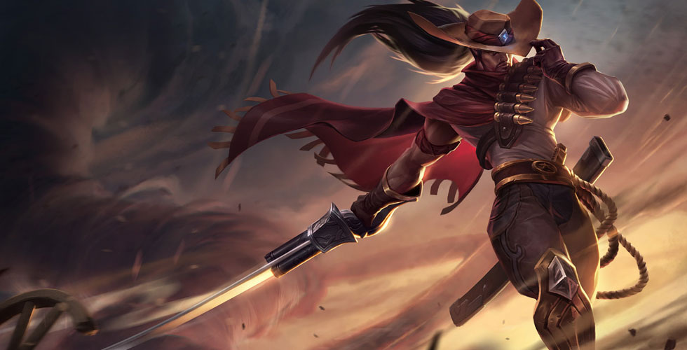

皮肤展示



孩童时期的亚索经常把村里人对他的评价信以为真：好听的时候，他的出生是一次判断失误；不好听的时候，他是个永远无法挽回的过错。
和大多数痛苦一样，这些话语也包含着些许真相。他的母亲原本是一位抚养着独生子的寡妇，而那个本应作为亚索父亲的人则如同金秋的微风般吹进了她的生活。随后他不等艾欧尼亚的寒冬降临到这个家庭，就又像那个寂寞的季节一般悄然离开了。
虽然亚索同母异父的哥哥永恩与他截然相反——恭敬、谨慎、自觉——但是他们二人还是亲密无间。当其他孩子戏弄亚索的时候，永恩总是会出来维护他。虽然亚索缺乏耐性，但他的意志却十分坚韧。当永恩开始去村里著名的剑术道场求学的时候，年幼的亚索也跟去了，在外面的风雨中痴痴苦等，直到师父们终于软下了心，打开了大门。
让同辈们咬牙切齿的是，亚索展现出超凡的天赋，成为了数辈生徒中唯一一名得到素马长老关注的人，他是传奇御风剑术的最后一位大师。这位老人看到了亚索的潜力，但这名冲动的弟子却拒绝他的独门传授，就像不受约束的旋风一样。永恩恳求自己的弟弟放下傲慢的态度，并送给他一枚枫树种子，这是道场关于谦卑的至高训诫。第二天早晨，亚索成为了素马的徒弟，同时也担任他的贴身侍卫。
当诺克萨斯入侵的消息传到道场的时候，有些人受到了普雷西典的挺立之战的鼓舞，很快村庄里的壮丁就被抽空了。亚索渴望在战场上贡献自己的剑术，但即便他的同辈和哥哥全都离家参战，他依然要奉命留下保护长老们。
入侵演变成了持久战。终于，在一个湿漉漉的雨夜，诺克萨斯行军的战鼓从毗邻的山谷中传来。亚索抛弃了自己的岗位，愚蠢地认为能够凭一己之力扭转乾坤。
但等待他的不是战斗——而是数百具诺克萨斯人和艾欧尼亚人的尸体。这里刚刚发生了某种可怕怪异的事情，绝非一刀一剑能够阻止。大地似乎也被玷污了。
清醒过来的亚索回到道场已是第二天，但被其余的门生团团围住，个个刀剑出鞘。素马长老死了，亚索发现自己不仅被指控擅离职守，而且还成了杀人凶手。他意识到，如果自己不尽快行动，真凶就会逍遥法外，所以他拔剑而战，挣脱了抓捕，当然他也知道，这个行为无异于承认了自己的罪行。
于是亚索成了战后艾欧尼亚土地上的逃犯，搜寻着任何可能让他找到凶手的线索。而与此同时，昔日的朋友们却成了追杀他的猎人，一次又一次地逼迫他在战斗与死亡之间做出选择。这始终都是他甘愿背负的代价，直到他遇到了最可怕的对手——他的哥哥，永恩。
二人遵照荣誉礼法，相互绕行。当他们的剑刃最终交锋时，永恩未能匹敌，随着一道钢铁的寒光，亚索手刃了自己的兄长。
他恳请哥哥的原谅，但永恩临死前只是告诉他，杀掉素马长老的是御风剑术，而亚索是唯一一个可能掌握此术之人。然后他便永远沉默了，至死也未能说出原谅的话语。
没有了师父和兄长，亚索悲痛欲绝地在山中流浪，如同一柄无鞘之剑，苦饮着战争与失落的痛苦。在冬山的雪原上，他遇到了塔莉垭，一位从诺克萨斯军中逃跑的恕瑞玛土石法师。出乎意料的是，她成了自己的学徒，而更让亚索意外的是自己竟然也能够身为人师。他将元素魔法之道传授给她，风雕石磋，亚索终于领悟了素马长老的教诲。
恕瑞玛天神皇帝崛起的传闻改变了他们的世界。亚索和塔莉垭分道扬镳，但他将那颗珍藏的枫树种子赠给了她，种子所承载的训诫他已彻底领悟。塔莉垭启程返回沙漠故土，亚索也动身前往他的故乡村落，决心改正自己的错误，找到杀害师父的凶手。
在议会大厅的石墙内，素马长老死亡的真相终于得以揭露——诺克萨斯的一个流放者锐雯引发的一场意外。而她自己也为此痛悔不已。即便这样，亚索仍然没法原谅自己当初抛下师父擅自离去，更没法原谅自己亲手杀害了永恩。
亚索最后前往崴里参加绽灵节，这里的疗慰祭典或许能安抚他的心，但他并没抱以多大希望。而在这里，他遭遇了一个试图吞噬他的恶魔生物——一只亚扎卡纳，盯上了他的痛苦和悔恨。
然而一个戴面具的人插了进来，带着刚正的怒火击败了那个魔物，亚索发现自己认识这个人——他是永恩。
亚索以为自己的哥哥一定会报仇，但令他意外的是，永恩丢下了一句苦涩的祝福，放走了他。
如今亚索已不再留恋初生之土，他踏上了一段新的冒险之旅，虽然自己也不知道将去向何方，只有负罪感还在拖累不羁的风。